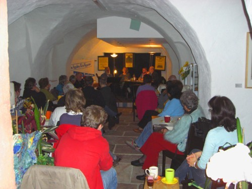

zugesandter Terminhinweis
Das Anti-Atom-Bündnis Aschaffenburg ruft zum Weltklimatag am Samstag, den 3. Dezember von 11 bis 15 Uhr in der Herstallstraße vor der Buchhandlung Diekmann zu einer Kundgebung auf.
(mehr…)
zugesandter Terminhinweis
Das Anti-Atom-Bündnis Aschaffenburg ruft zum Weltklimatag am Samstag, den 3. Dezember von 11 bis 15 Uhr in der Herstallstraße vor der Buchhandlung Diekmann zu einer Kundgebung auf.
(mehr…)
Auszug aus: Main-Echo, 28.11.11
Der Castor-Transport nach Gorleben hat in der Nacht auf Samstag Stadt und Kreis Aschaffenburg ohne jegliche Behinderungen passiert. … Etliche Schaulustige warteten schon lange vor Eintreffen des Zugs am Stockstädter Bahnübergang, Demonstranten waren unter den Zuschauern keine zu erkennen. Dennoch hatte Polizei und Bundespolizei Stellung bezogen, Beamte patrouillierten entlang der Zugstrecke.
Von Darmstadt kommend passierte der Castor-Transport kurz nach 0.30 Uhr den Stockstädter Bahnübergang, bevor er in Aschaffenburg das Gleis wechselte. Über Kleinostheim, Karlstein und Kahl verließ der Castor bereits nach rund 20 Minuten Bayern und setzte seine Fahrt in Hessen fort.
Okay, das hat jetzt nicht wirklich etwas mit dem Untermain zu tun, außer, dass die Zeitschrift analyse & kritik auch mehrfach über Geschehnisse bei uns berichtet hat. Aber dass ein linkes, alternatives, aufklärendes Medium (hier aus dem Print-Bereich) 40 Jahre alt wird, das ist (speziell in Zeiten des Internets) ein Ereignis, das es zu würdigen gilt. Und daher steht bei unserer Schwesterseite disk.blogsport.de auch eine Meldung dazu.
Pressemiteilung des Bündnis gegen Rechts Aschaffenburg
Die Medien-Aufmerksamkeit, die dem Thema „Rechtsextremismus“ mit Bezug zur Region jetzt auf Grund der aktuellen Enthüllungen um ein rechtsextremes Terror-Trio und die Beziehungen des Verfassungsschutzes zur Szene zuteil wird, sieht das Bündnis gegen Rechts Aschaffenburg mit Interesse, doch hat der Artikel „Rechtsextremismus: Löcher im braunen Netz“ vom 19.11.2011 im Main-Echo bei seinen Mitgliedern auch Besorgnis hervorgerufen.
Nach Ansicht des Bündnis gegen Rechts leistet der Artikel genau das, was dem „Nationalsozialistischen Untergrund“ seine Aktivitäten erleichterte: eine Verharmlosung von Neonazis und ein Verschweigen ihrer tatsächlichen Aktivitäten. So heißt es: „Von den drei NPD-Kreisverbänden trete nur der Kreisverband Mainfranken mit politischen Aktionen an die Öffentlichkeit“ (Main-Echo).
Im Gegensatz zu den vornehmlich den Verfassungsschutzbericht zitierenden Stellen lässt die kontinuierliche Recherche von Mitgliedern im Bündnis gegen Rechts den Schluss zu, dass es im vergangenen Jahr 2011 einen spürbaren Anstieg der Aktivitäten von Neonazis in der Region Aschaffenburg/Miltenberg gab. Dabei trat vor allem der NPD-Kreisverband Aschaffenburg/Miltenberg wieder verstärkt in Erscheinung.
(mehr…)
zugesandter Terminhinweis
KAB, Betriebsseelsorge, Gewerkschaft Erziehung und Wissenschaft und das globalisierungskritische Netzwerk Attac laden ein zum Thema
EUro-Krise: „Das Geld der Armen liegt in den Häusern der Reichen“ (Jesaja 3,14)
Mittwoch, 07. Dezember 2011, 19.30 Uhr
Martinushaus, Aschaffenburg
Treibgasse 26
Vortrag- und Diskussionsabend mit
den beiden Griechenlandexperten
Ralf Dreis, Wiesbaden, FAU
und Jannis Komianos, Lohr, DIE LINKE und IGM
Weitere Infos zur Veranstaltung HIER (PDF), zu griechenland HIER (PDF).
Zwei Meldungen für die Rubrik RECHTS (siehe Button-->) mussten wir nachtragen:
April 2011: „Die in Bio- und Naturkostläden ausliegende Zeitschrift `Schrot & Korn´ des Aschaffenburger `Bio-Verlags´ erscheint mit einer ganz speziellen Beilage: Mit einem mehrseitigen Einleger (`Bücher, die Ihnen die Augen öffnen´) wirbt der `Kopp-Verlag´ aus dem württembergischen Rottenburg in der April-Ausgabe für sein Programm. (mehr…)
Wir haben sie ja schon am 26. Oktober ins Netz gestellt, die Info, dass KBF RVOLTE ein neues Album hat, das es kostenlos zum Download gibt. Aber dennoch erfreulich: Heute schreibt Main-Echo-Kulturchef Stefan Reis unter der Überschrift „KBF Revolte: Konsequenz aus Miltenberg“ einen ausführlichen Hinweis auf KBF REVOLTEs neues Produkt. Doch lesen wir einfach mal bei ihm nach:
„Spätestens seit der Läuterung des Berliner Rappers Bushido und der damit einhergehenden Würdigung mit einem »Bambi« wissen wir: Show ist und bleibt Show. (mehr…)
Die kleine Zusammenstellung der Gedenkveranstaltungen am 9. November 2011 am bayerischen Untermain ist nun fertig und kann hier aufgerufen werden.

Foto oben: In Miltenberg bei der Gedenkveranstaltung im Café fArbe
zugesandter Terminhinweis
Konzert am Samstag, 19. November, 20 Uhr im Café fArbe, Miltenberg, Engelplatz mit KLEZMUSICA – jiddische Folklore und Weltmusik, Eintritt frei, Spenden zugunsten der Arbeit im Caritas-Treffpunkt Café fArbe erbeten; eine Veranstaltung von: Café fArbe der Caritas und Freundeskreis Café fArbe e.V.
Eine offenbar völlig neue Erkenntnis macht sich nun in Deutschland angesichts von zehn oder mehr auf das Konto einer einzigen Nazi-Gruppe gehenden Morde breit: Nazis sind gewalttätig! Das hat wohl niemand gewußt. Oder doch? Na, zumindest wir waren nicht dümmer als der Verfassungsschutz und haben schon vor längerer Zeit einen Beitrag aus dem Jahr 2006 über die Waffen der braunen Kameraden verlinkt. Und wir haben eine Dokumentation aus dem Jahr 2004 wieder veröffentlicht, in der es schon damals hieß: (mehr…)
zugesandter Terminhinweis
afa, attac und KAB laden ein zu Vortrag und Diskussion „Zwei-Klassen-Medizin oder Solidargemeinschaft? Von der Ökonomisierung und Privatisierung unseres Gesundheitssystems“ am Freitag, 25. November 2011 um 19.00 Uhr im Martinushaus Aschaffenburg.
Referent ist Dipl. Pol. Kai Mosebach vom Institut für Medizinische Soziologie der Universität Frankfurt am Main.
Als kommunal_print Nr. 3 ist ein Auszug aus dem Beitrag „Tatort Miltenberg“ erschienen (PDF). Er beschäftigt sich mit dem 9. und 10. November 1938 in Miltenberg und enthält den kurzen Vortrag bei der Veranstaltung vom 9. November 2011 sowie Auszüge aus den Erinnerungen von Paul Briscoe und die Liste der bekannt gewordenen ermordeten Jüdinnen und Juden aus Miltenberg (beides wurde am 09.11.11 in Miltenberg ebenfalls vorgetragen). Das vierseitige Blatt wurde bei der Miltenberger gedenkveranstaltung am 09.11.11 verteilt.
Die kurzfristig erhältlichen kommunal_print 3 und 4 waren Beiträge für das Bündnis gegen Rechts Aschaffenburg und werden auf Wunsch des Bündnisses nicht mehr verbreitet.
zugesandte Meldung
Eine Besucherin hielt es schlicht für „die beste Veranstaltung dieser Art, die ich je besucht habe“. Gemeint ist der Miltenberger Gedenkabend am 9. November, der an die Pogrome von 1938 erinnerte und zu der Menschen aus dem ganzen Landkreis sowie aus Aschaffenburg gekommen waren. Neben Liedern, Texten und einem kurzen Vortrag wurden erstmals die Namen jener jüdischen Mitbürgerinnen und Mitbürger aus Miltenberg verlesen, die im Naziterror ermordet wurden.
--> Mehr dazu gibt es auf unserer Sonderseite zum 9. November 2011 am bayerischen Untermain.

zugesandter Beitrag
Da letzten Montag die Montagsdemo ausfallen musste, wollen wir sie am 14. November nachholen. Wie üblich treffen wir uns ab 16 Uhr 30 bis 19 Uhr am Eingang Schöntal-Park (gegenüber Herstallturm). (mehr…)
Info von Peter „Lucky“ Kraft
Am Montag, den 7. November um 20 Uhr lesen die Bestplatzierten des 11. Aschaffenburger Poetry Slam
Jens Kaup
Agnes Müller
und
Christian Kiehl
in der Buchhandlung Diekmann in der Steingasse 2 / Ecke Herstallstraße, Aschaffenburg ausführlicher aus ihren Werken. Eintritt frei!
www.lucky-art.de
www.aschaffenburgerpoetryslam.de
zugegangener Terminhinweis
Selbst das Winterhilfswerk war – wie z.B. auch die Planung des Autobahnbaus – kein Werk der Nazis. Sie fanden die Pläne dazu bei der Machtübergabe an Hitler schon vor. Was sie wirklich geleistet haben: Daraus einen Teil des ideologischen und kriminellen Konstruktes der Volksgemeinschaft zu machen.
Hermann Neubert, Museumsleiter in Miltenberg, referiert dazu am Sonntag, 27. November, 10 Uhr im Rahmen der Reihe „Geschichte statt Stammtisch“ im Museum Miltenberg, Marktplatz.
zugesandter Terminhinweis
Vom 7. bis 17. November zeigt amnesty international Kreisgruppe Miltenberg im Landratsamt Miltenberg eine Ausstellung zu „50 Jahre AMNESTY INTERNATIONAL“. Die Vernissage ist am 7. November, 19 Uhr.
zugesandte Information
Am Samstag, den 05. Oktober stellen wir vom Anti-Atom-Bündnis Aschaffenburg in der Herstallgasse (Höhe Buchhandlung Diekmann) zwischen 11 und 14 Uhr unter dem Motto „Gorleben soll leben – Stopp Castor“ einen Info-Stand auf. Wir informieren über das geplante Atommüll-Endlager im Salzstock Gorleben, sowie über den Widerstand dagegen. Außerdem werben wir für die Mitfahrt zur Demo am 26. November in Dannenberg.